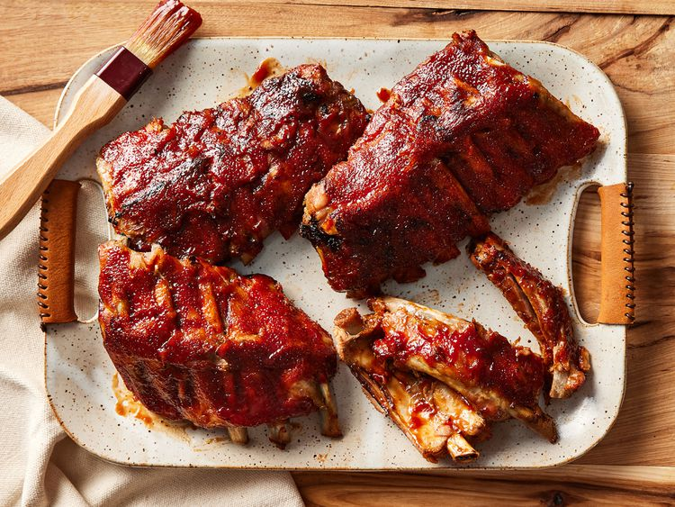

These slow cooker ribs are the best — they turn out perfect every time! They cook in a crockpot until tender, then are covered with barbeque sauce and finished in the oven for fall-apart ribs. Perfect for during the week as the slow cooker does most of the work!
